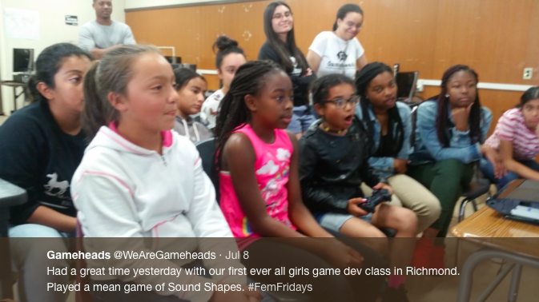

Through Gameheads, I was given an opportunity to work with middleschool girl and teach them a few things about game design. When I worked on my game project, I was our team's game designer. Of course I would jump at the opportunity to teach other girls about game design!
Woking with these middle school girls definitely helped a lot with my leadership skills. It also helped with being interesting enough for middle schoolers to listen to me and pay attention. At first it was difficult holding thier attention but eventually I realised I had to be very high energy and move around a lot.
If I had the chance to teach these girls or other students about game design, I would. I enjoyed myself very much and hope that they learned something from me, even if it wasn't very much